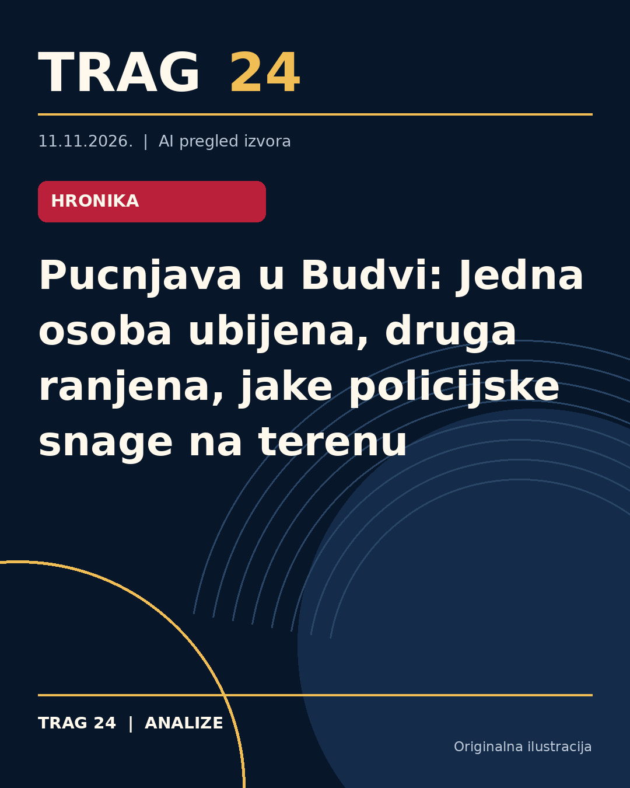

Pucnjava u Budvi: Jedna osoba ubijena, druga ranjena, jake policijske snage na terenu

ŠTA SE DOGODILO
U Budvi je došlo do pucnjave ispred jednog ugostiteljskog objekta u naselju kod glavnih semafora. Prema izveštajima, u incidentu je jedna osoba smrtno stradala, dok je najmanje jedna druga ranjena. Na licu mesta odmah su intervenisale jake policijske snage koje su blokirale ulice u okolini pucnjave i vrše pretres i prikupljanje dokaza.
HRONOLOGIJA
Pucnjava se dogodila u popodnevnim časovima. Svedoci su izjavili da su nakon pucnjave više osoba trčalo naseljem, a policija je uspela da zadrži ranjenog muškarca kod Osnovne škole i prebacila ga kolima hitne pomoći. Ulice u centru Budve, uključujući glavnu raskrsnicu, bile su blokirane zbog policijske intervencije i istrage na terenu.
ŠTA NAVODE IZVORI
Kurir izveštava o jednoj ranjenoj osobi i velikom prisustvu policije. Blic navodi informaciju da je u pucnjavi jedna osoba poginula, a druga ranjena, kao i detalje o blokadi ulica i pretresu na mestima događaja. Informer se u svojim izveštajima fokusira na druge događaje vezane za pucnjave u regionu i ne potvrđuje direktno informacije o pucnjavi u Budvi.
ŠTA JE POTVRĐENO
Utvrđeno je da je pucnjava zaista događaj koji se desio u Budvi u blizini ugostiteljskog objekta, kao i da je na mesto događaja izašla policija koja je preduzela mere bezbednosti i radila na prikupljanju dokaza. Potvrđeno je da je jedna osoba ranjena i da je prebačena na lekarsku pomoć, dok izvor Blic navodi i postojanje jedne žrtve smrtno stradale od vatrenog oružja.
ŠTA NIJE POTVRĐENO
Tačni uzroci pucnjave, identiteti učesnika i motivi incidenta nisu zvanično potvrđeni. Takođe, broj osoba koje su učestvovale nikome nije poznat sa dostupnih informacija. Informacije o eventualnim hapšenjima i daljoj istrazi nisu precizno poznate, kao ni moguće veze događaja sa drugim incidentima u regionu.
ŠTA OSTАJE OTVORENO: Ostaje da budu precizirani detalji istrage koju sprovodi policija, uključujući ko je ispalio hitac koji je doveo do smrti i ranjavanja, kao i da se eventualno saopšte imena i status osumnjičenih ili osumnjičenog. Takođe, ostaje otvoreno pitanje da li će biti novih saopštenja vlasti o uzrocima i posledicama pucnjave.
Izvori
- https://www.kurir.rs/region/crna-gora/10159777/pucnjava-u-budvi-jedna-osoba-povredjena-policija-na-licu-mesta
- https://www.blic.rs/vesti/hronika/pucnjava-u-centru-budve-ima-mrtvih-i-ranjenih-policiija-blokirala-ulicu/90ghjnh
- https://informer.rs/hronika/vesti/1169037/pucnjava-budva-semafor
Ova analiza je pripremljena uz pomoć veštačke inteligencije na osnovu javno dostupnih izvora. Navodi izvora nisu nužno nezavisno potvrđeni.